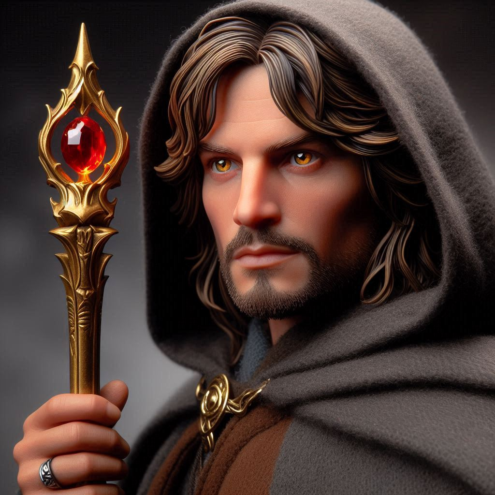
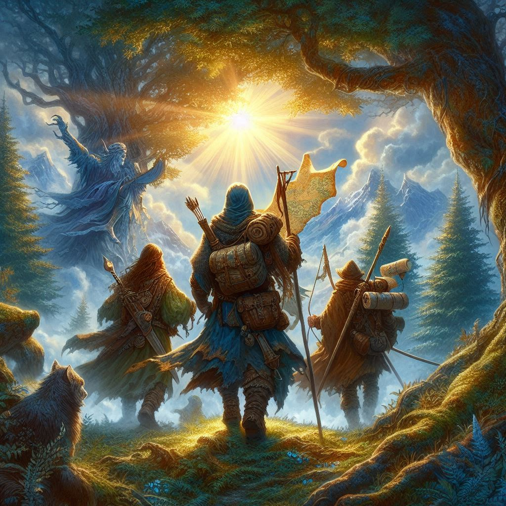

Calen és társai a térképet követve végre elértek az ősi romváros központjába, ahol a jogar rejtélyesen állt egy magas, kör alakú oltáron. Az oltár körül az árnyak őrzői kavarogtak – sötét, homályos lények, akik a jogar hatalmát védelmezték. Calen nem habozott, és minden eddigi bátorságát összegyűjtve szembeszállt velük. Kardjának suhintásai és társai támogatása révén végül legyőzték az őrzőket, a romvárost pedig fény töltötte be.
Calen lassan fellépett az oltárhoz, és megragadta a jogart. Amint a kezébe zárta, érezte annak erejét, amely átfutott rajta, és mintha a világ maga is megkönnyebbült volna. A természet lassan visszanyerte régi harmóniáját, az ég tisztává vált, és a föld megnyugodott. Calen büszkén tartotta magasba a jogart, tudva, hogy küzdelmeik nem voltak hiábavalóak.
Társaival együtt elhagyták a romvárost, készen arra, hogy egy új világ felépítésébe kezdjenek, ahol a jogar erejét igazságosan használják. A hosszú kaland véget ért, de hőstettük története örökre fennmaradt a legendákban, mint a bátorság, összetartás és igazság szimbóluma.

